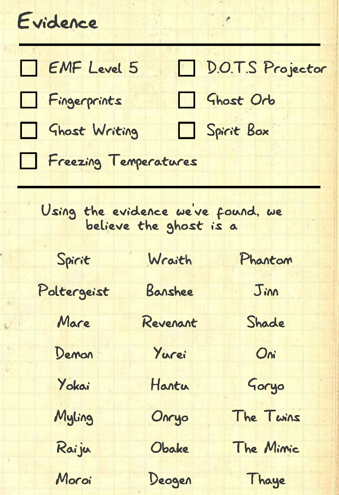

Equipments
What is the use of Equipments?
Equipments are used for 2 purposes:
1. Identify the type of Ghost Haunting the area.
2. Complete Objectives
How to identify a ghost?
Unless you are playing Nightmare or Custom difficulty,
each Ghost you encounter will have at least 3 evidence to identify the Ghost.
You can use the Journal in game by pressing J to acces the evidence page
and use the process of elimination to identify the ghost by cancelling, marking
evidence found and not found.


What are the different type of equipments?
1. Equipments to find Ghost type
2. Equipments to complete Objectives.
This can be seen divided into two section in the starting Van
and Lobby Menu.


Items to find Evidence
EMF Reader
EMF Reader is used to detect ghost activity around the area when the ghost interacts
with objects, doors and windows.By default, the emf reader's reading will be at 1 until
a ghost interaction is seen/detected.If the EMF lit up 5, EMF 5 evidence is present.


Flash Light
The Flash Light is just an item to help give players vision to navigate throughout the area.
Can be toggled while not holding it by pressing T.

Ghost Writing Book
The Ghost Writing book enables the Ghost to interact with the book to write on it.
If the ghost writes on the book, it gives the evidence of Ghost Writing evidence.


Spirit Box
The Spirit box is an item for users to use their in game Microphone to communicate with the ghost.
It reacts to question and users can hear it's answer.
Question example: Are you here? Are you close? Do you want to hurt me?
You can also see the Ghost sign lit up when the Ghost reacts.


Items for Objectives
Photo Camera
A photo camera is used to capture evidence of Ghost Interactions,
Cursed Objects, Bone and a Ghost photo to earn extra cash to fund
more items for your next game. Each camera can take up to 5 photos,
indicated at the top right of the camera.


Candle
The candle is an item that allows the ghost to
interact with it by blowing it out when placed in the ghost room.
It is normally used to complete objectives.


Crucifix
The crucifix is a strong item to have once you identify the ghost
room,it PREVENT HUNTS from starting but does NOT prevent the
ghost from chasing
AFTER THE HUNT HAVE STARTED.
Each crucifix have 2 uses and is noticable from the looks.
(left is new right is used)

Glow Stick
The Glow Stick is another item that gives black light, similar to UV
light. It is used to look for finger prints and foot prints around an area.


Head Mounted Camera
The head Mounted camera is an alternative solution to
view your teammates in the haunted area without the need
to sacrifice an inventory slots to hold a video camera.
Functions the same as a video camera. Does not show Ghost orbs.


Lighter
A lighter is used to light up candles and smudge sticks.
It can also be used to light up camp fires at camp Woodwind
and Maple Campsite.
Motion Sensor
A Motion Sensor will light up when a player or Ghost walk past it.
It is mainly used to complete Objectives.


Parabolic Microphone
A parabolic microphone is commonly used in bigger maps to find the ghsot
room due to the how large the map is. You can also hear the Ghost scream
when using the parabolic microphone.

Salt
Salt is used to reveal foot prints from a ghost to take a photo to earn extra cash
It is also an objective for the ghost to walk through salt.


Sanity Pills
Sanity pills is a helpful item to recover sanity to reduce
the chances of the ghost hunting. Each pills recover 40% sanity.


Sound Sensor
The Sound Sensor is normally used for Big maps. It is used to find the
rough location of the ghost when the ghost interacted with an obeject.
When the ghost interacts, the sound sensor will pick up sounds and send
back to the truck to show players the ghost in the the area.


Strong Flash Light
The Strong Flash Light is an upgraded version of a Flash Light, with a brighter
Light which allows players to have better vision navigating.
Weak Flash Light
Strong Flash Light

Thermometer
The thermometer is an item to help find the location of the Ghost.
The temperature of the thermometer will be below 5 degrees when you
are in the ghost room. It also helps to see if it is freezing when
the reading is negative.
NOTE: Thermometer only work when breaker is on.

Tripod
The Tripod is a useful item to help mount the video camera to be
placed nicely in the ghost location to view activity in the van safely.


 >
>